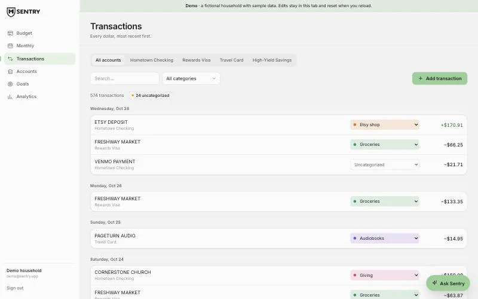
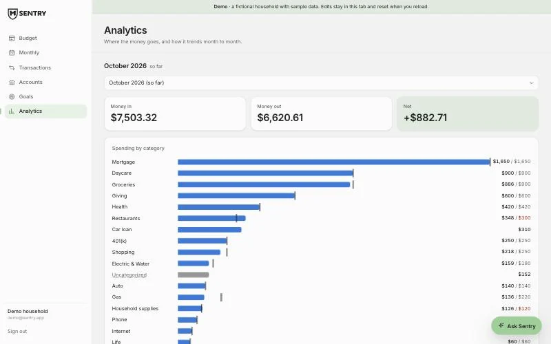
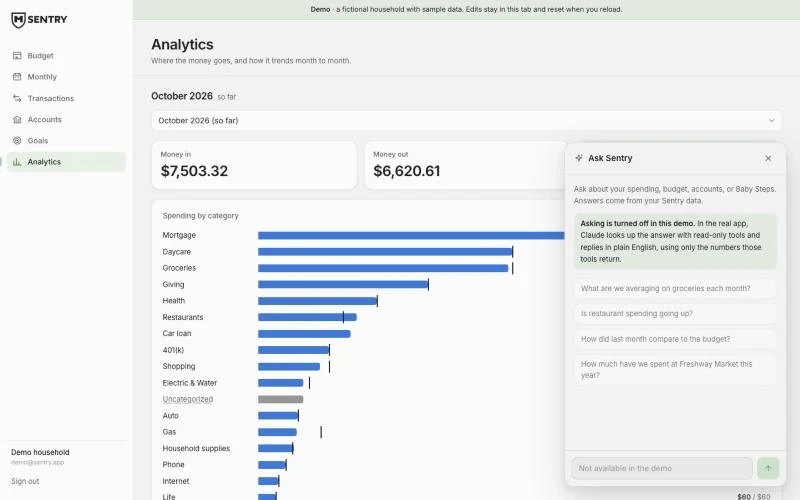

Personal Product · Finance
A budgeting app I designed and built for my family, so I could actually see, and touch, where our money goes.
The live demo is open to the public and runs on a fictional household's sample data.
Why I Built It
Our finances were fine on paper, but I was stressed because I had no feel for how our money actually moved. I'm a designer and a tinkerer, and I don't fully grasp something until I touch it with my hands, so I built the tool I wanted.
"Our finances were working, but I had no idea how our money was working. So I built something I could put my hands on."


Ask Sentry
"Ask Sentry" is a Claude agent, on the Sonnet model, wired to read-only tools over our Sentry data. It can look things up and answer, but it can't change anything, and the numbers it cites are the real ones from our ledger.
The agent only reads what's in Sentry. Ask "how much did we spend on groceries this month" and it looks up the answer with its tools and replies in a sentence, using only the numbers those tools return.
Before Ask Sentry, every question was a manual tally. Now the ledger answers back, which is the whole point of keeping it by hand in the first place.

Decisions Worth Defending
Connectors cost money, skip small banks, and put a layer between me and the money. Typing each transaction is slower on purpose, it keeps me in contact with every dollar.
Sentry is just for my wife and me. Scoping it to one household keeps it honest and simple, I can design for exactly how we live instead of a hypothetical user.
Ask Sentry can see everything and change nothing. Money data is the last place I want an assistant improvising, so its tools are read-only.
The tax layer tags income and write-offs and hands off a clean CSV to my CPA. Sentry does the tracking it's good at, and leaves the filing to a human who's good at that.
Shipped
Open to the public. The demo runs on a fictional household's sample data; edits stay in your tab and reset on reload.